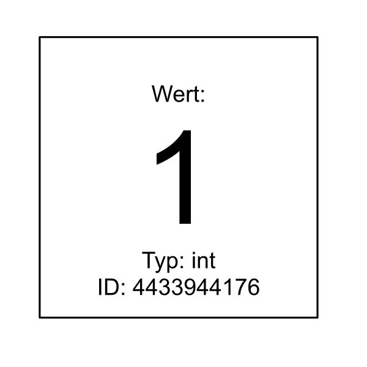
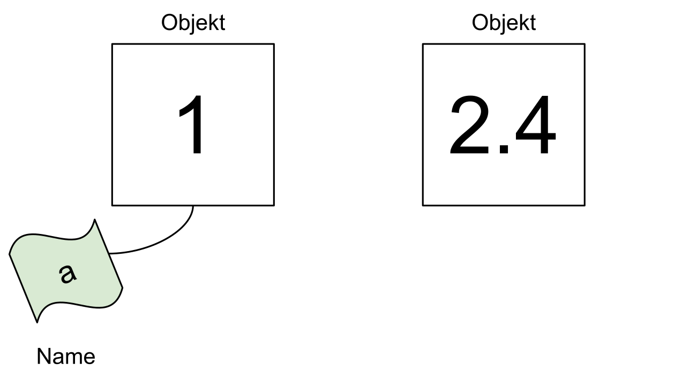
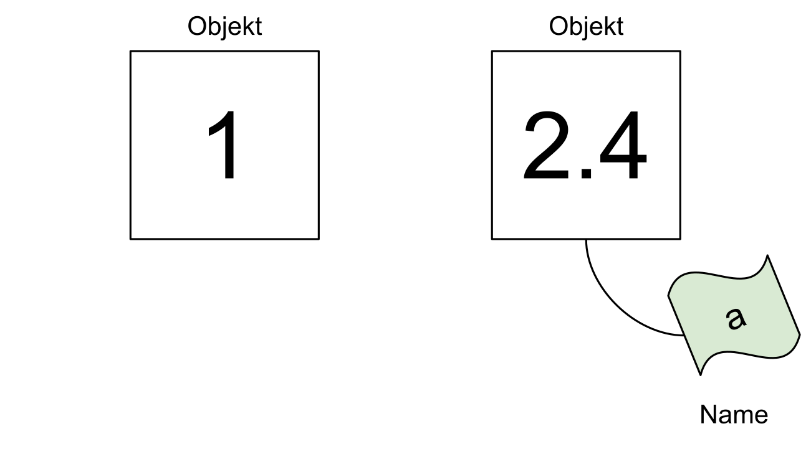
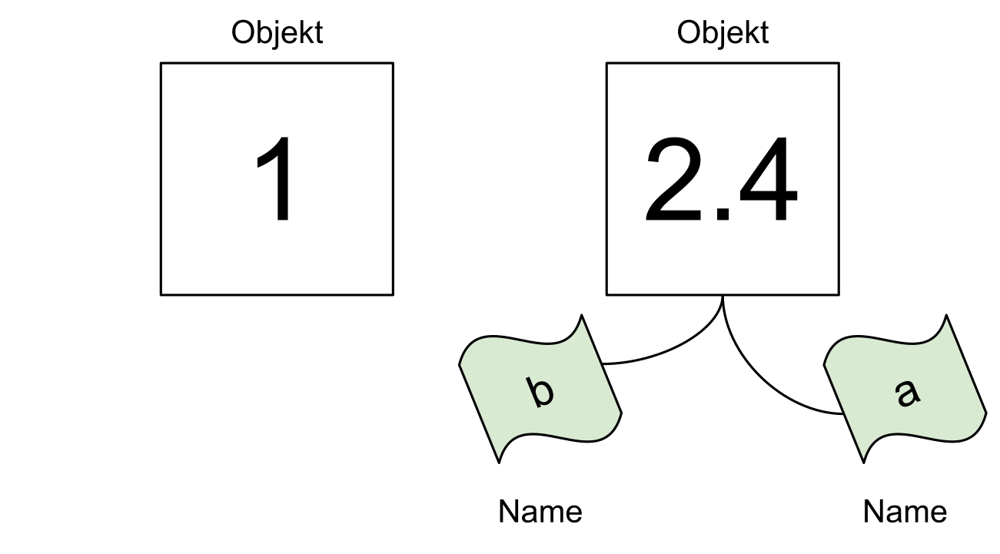

11Einführung in Python und PsychoPy
Clemens Brunner
16. Oktober 2025
Alles in Python ist ein Objekt. Ein Objekt hat einen bestimmten Wert, z.B.
Python gibt im interaktiven Modus Werte automatisch aus.
Jedes Objekt hat neben einem Wert auch einen bestimmten Typ. Mit type kann man den Typ eines beliebigen Objekts herausfinden:
Man kann sich ein Objekt als eine Entität eines bestimmten Typs vorstellen, die einen bestimmten Wert hat und im Speicher des Computers lebt:

Jedes Objekt hat auch einen eindeutigen Identifikator. Mit der Funktion id kann man diesen herausfinden:
Die tatsächlichen Identifikationsnummern sind irrelevant (und sehr wahrscheinlich von Sitzung zu Sitzung unterschiedlich). Es ist nur wichtig, ob zwei Identifikationsnummern in einer laufenden Python-Sitzung identisch sind oder nicht. Im vorherigen Beispiel hat das Objekt 3 eine andere Identifikationsnummer als das Objekt 4, daher wissen wir, dass dies zwei verschiedene Objekte sind.
Namen in Python sind nichts anderes als Namen für bestimmte Objekte (in anderen Programmiersprachen werden Namen meistens als Variablen bezeichnet). Mit dem Zuweisungsoperator = können wir einem Objekt einen Namen geben:
Einen Namen kann man sich als Etikett vorstellen, das an ein Objekt gehängt wird:

a ist dem Objekt 1 zugeordnet. Ein weiteres Objekt 2.4 hat (noch) keinen Namen.In Python kann man einen existierenden Namen jederzeit einem anderen Objekt zuweisen. Dabei verliert der Name seine Verbindung zum alten Objekt (im folgenden Beispiel hat das Objekt 1 danach keinen Namen mehr):

a dem Objekt 2.4 zugeordnet, und das Objekt 1 hat keinen Namen mehr.Ein Objekt kann auch mehr als einen Namen haben:

2.4 zwei Namen a und b.Wir können bestätigen, dass die Namen a und b auf dasselbe Objekt verweisen, indem wir ihre entsprechenden Identifikatoren überprüfen:
Tatsächlich sind sie identisch, es gibt also nur ein Objekt mit zwei Namen. Wenn wir überprüfen wollen, ob zwei Namen an ein und dasselbe Objekt gebunden sind, können wir auch das Schlüsselwort is als Abkürzung verwenden:
Der Typ eines Namens entspricht dem Typ des Objekts, auf das er verweist:
Wenn Python einen Namen verwendet, ersetzt es diesen Namen immer durch den Wert des entsprechenden Objekts. Außerdem wertet Python immer zuerst die rechte Seite einer Zuweisung aus, bevor es den Namen zuweist. Betrachten wir folgendes Beispiel:
Nun hat x immer noch den Wert 11:
Wir können jetzt den Namen x einem anderen Objekt 2 zuweisen:
An dieser Stelle hat x nach wie vor den Wert 2 (und nicht 4). Wir können x jedoch erneut zuweisen und sogar den alten Wert von x auf der rechten Seite der Zuweisung verwenden:
Gültige Namen können Buchstaben (Groß- und Kleinbuchstaben), Ziffern und Unterstriche enthalten (aber ein Name darf nicht mit einer Ziffer beginnen). Zusätzlich gibt es noch PEP8, welches Empfehlungen zur Auswahl guter Namen enthält. Vorerst ist nur eine Konvention für uns wichtig, nämlich dass alle Namen in Kleinbuchstaben geschrieben werden sollten und, wenn nötig, auch Unterstriche enthalten dürfen, wie z.B. lower_case_with_underscores.
Namen sollten Bedeutung vermitteln, daher sollte man anstelle eines generischen x oder i versuchen, einen Namen zu finden, der etwas über die beabsichtigte Verwendung aussagt. Außerdem ist es gute Praxis, englische (und nicht z.B. deutsche) Namen zu verwenden, da man nie weiß, wer den eigenen Code in Zukunft lesen wird.
Hier sind einige Beispiele für die Benennung eines Objekts, das die Anzahl der Schüler in einer Schulklasse darstellt:
Es gibt in Python vordefinierte Namen (sogenannte Schlüsselwörter oder englisch Keywords) – diese dürfen nicht als eigene Namen verwendet werden, da sie vom Python-Interpreter benötigt werden, um die Struktur eines Programmes zu erkennen. Mit folgenden Befehlen bekommt man eine Liste aller Schlüsselwörter:
['False',
'None',
'True',
'and',
'as',
'assert',
'async',
'await',
'break',
'class',
'continue',
'def',
'del',
'elif',
'else',
'except',
'finally',
'for',
'from',
'global',
'if',
'import',
'in',
'is',
'lambda',
'nonlocal',
'not',
'or',
'pass',
'raise',
'return',
'try',
'while',
'with',
'yield']Das bedeutet zum Beispiel, dass man den Namen lambda nicht verwenden kann. Wenn man es doch tut, wird Python einen Fehler ausgeben:
Neben Schlüsselwörtern gibt es aber auch sogenannte eingebaute Funktionen, die standardmäßig in Python verfügbar sind. Diese Funktionen kann man also ohne import direkt verwenden. Es ist nicht sinnvoll, diese Funktionen zu “überschreiben”, obwohl dies nicht explizit verboten ist. Eine Liste aller eingebauten Funktionen bekommt man mit folgendem Funktionsaufruf (beachten Sie, dass dir ebenfalls eine eingebaute Funktion ist):
Wenn man wirklich einen Namen einer eingebauten Funktion verwenden möchte, ist es besser, den Namen leicht zu verändern, z.B. indem man einen Unterstrich anhängt. Anstelle von lambda könnte man daher lambda_ verwenden.
Operatoren sind spezielle Symbole, mit denen man Berechnungen wie Additionen, Subtraktionen usw. durchführen kann, also z.B. +, -, *, /, **, //, %, usw. Wir haben einige Operatoren bereits bei der Verwendung von Python als Taschenrechner kennengelernt. Manche Operatoren benötigen zwei Operanden (z.B. die Multiplikation 2 * 3), andere brauchen hingegen nur einen einzigen Operanden (z.B. die Negierung -5). Solche Operatoren werden als binäre bzw. unäre Operatoren bezeichnet.
Ein Ausdruck ist Code, der zu einem Wert ausgewertet (reduziert) werden kann. Das kann ein einzelner Wert (z.B. 42), ein Name (z.B. x) oder eine Kombination aus Werten, Namen und Operatoren (z.B. x + 2) sein. Hier sind einige Beispiele für Ausdrücke:
Python reduziert einen Ausdruck immer auf einen einzigen Wert. Ein komplexerer Ausdruck wird schrittweise gemäß den Regeln der Operatorpräzedenz (z.B. Punkt- vor Strichrechnung) von links nach rechts ausgewertet. Wie bereits erwähnt, wertet Python zuerst die rechte Seite einer Zuweisung aus, bevor es einen Namen zuweist.
Eine Anweisung ist eine Einheit Code, die Python ausführen kann. Dies ist eine recht breite Definition, und Anweisungen umfassen daher Ausdrücke als Sonderfall (ein Ausdruck ist also eine Anweisung mit einem Wert). Es gibt jedoch auch Anweisungen, die keinen Wert haben, wie z.B. eine Zuweisung. Hier sind zwei Beispiele für Anweisungen, die keine Ausdrücke sind:
Wenn man diese Anweisungen im interaktiven Interpreter ausführt, gibt es keine Ausgaben – der Grund dafür ist, dass diese beiden Anweisungen keine Werte haben, d.h. es gibt hier im interaktiven Modus des Python-Interpreters nichts, was ausgegeben werden könnte.
Dass der Aufruf der print-Funktion trotzdem eine Ausgabe am Bildschirm bewirkt, liegt an der Funktion, deren Zweck ja genau diese Ausgabe ist. Dies kann man sehen, wenn man dem Funktionsaufruf einen Namen zuweist:
Der Typ des Wertes von print("Python"), der ja jetzt den Namen s hat, ist also:
Damit ist also klar, dass print("Python") keinen Wert hat (eigentlich None, denn in Python gibt es einen speziellen Wert None vom Typ NoneType, welcher für “kein Wert” steht).
Python bringt eine Menge nützlicher Datentypen mit. Im Folgenden werden die wichtigsten Typen aufgelistet und kurz beschrieben. Eine ausführliche Behandlung ausgewählter (wichtiger) Datentypen folgt dann in den nächsten Einheiten.
Der Typ bool wird für Vergleiche verwendet; es gibt nur zwei mögliche Werte, nämlich True und False.
int (Ganzzahlen)float (Dezimalzahlen)complex (Komplexe Zahlen)Aufgrund der begrenzten Rechengenauigkeit, mit denen Computer Dezimalzahlen darstellen, kann es zu Rundungsfehlern kommen (Dezimalzahlen können im Allgemeinen nicht exakt repräsentiert werden). Beispiel:
Man sollte daher Dezimalzahlen nie miteinander vergleichen:
Bei Ganzzahlen ist ein Vergleich aber kein Problem, da diese Zahlen exakt repräsentiert werden.
In speziellen Anwendungsfällen benötigt man komplexe Zahlen, welche direkt von Python unterstützt werden. Die imaginäre Einheit wird durch j dargestellt.
Sequenzdatentypen können mehrere Elemente beinhalten. Folgende wichtige Sequenzdatentypen werden von Python unterstützt:
str (String bzw. Zeichenkette)list (Liste)tuple (ähnlich wie list, kann aber nachträglich nicht mehr verändert werden)set (Ansammlung von unterschiedlichen Elementen, d.h. keine Duplikate)Der Datentyp dict beinhaltet Wertepaare, also Schlüssel (Keys) und zugehörige Werte (Values). Dieser Mechanismus funktioniert ähnlich wie ein Wörterbuch, daher auch die englische Bezeichnung “dictionary”.
Gegeben seien folgende Anweisungen:
Geben Sie zu jedem der folgenden Ausdrücke dessen Wert und Typ an. Versuchen Sie zunächst, die Antworten durch Überlegen herauszufinden und verwenden Sie erst dann den Python-Interpreter zum Überprüfen Ihrer Antworten.
width / 2height / 3height * 3height * 3.0delimiter * 52 * (width + height) + 1.512 + 3"12 + 3"Was ist der Unterschied zwischen einem Ausdruck und einer Anweisung? Führen Sie jeweils ein Beispiel an.
Was sind Schlüsselwörter in Python und wie erhalten Sie eine Liste aller Schlüsselwörter? Was sind eingebaute Funktionen und wie erhalten Sie eine Liste aller eingebauten Funktionen? Was müssen Sie beim Erstellen von Namen im Zusammenhang mit diesen beiden Konzepten beachten?
Nennen Sie außerdem einige Richtlinien, wie man gute Namen erstellt. Führen Sie ein Beispiel für einen guten Namen an!
Wie groß ist die Oberfläche bzw. das Volumen einer Kugel mit einem Radius von \(r=5\)? Führen Sie die Berechnung mit Python durch und weisen Sie den Ergebnissen die Namen area bzw. volume zu. Verwenden Sie für den Radius den Namen r und setzen Sie den Wert von r auf 5.
Sie können die Zahl \(\pi\) als math.pi verwenden, wenn Sie folgende Zeile ganz am Anfang Ihres Scripts hinzufügen:
Die Formel für die Oberfläche \(A\) einer Kugel lautet:
\[A = 4 \pi r^2\]
Das Volumen \(V\) einer Kugel kann man mit folgender Formel berechnen:
\[V = \frac{4}{3} \pi r^3\]
Mit welchem Befehl können Sie den Typ des Wertes True bestimmen? Um welchen Typ handelt es sich dabei? Welchen Typ hat der Name x, wenn Sie vorher x = "True" ausführen? Achtung: die Werte True und "True" in diesem Beispiel haben unterschiedliche Typen!
Wenn Sie in Übung 4 den Befehl import math ausgeführt haben, welchen Typ hat der Name math?